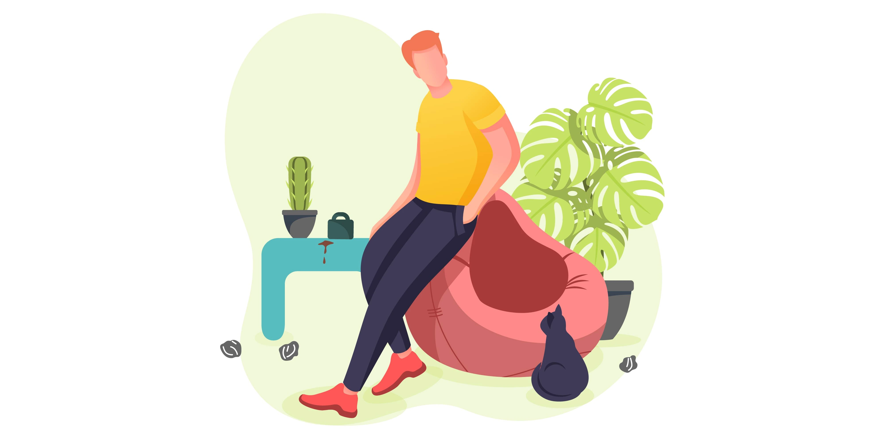

What is Bulimia Nervosa?
This is a serious mental illness characterized by repeated episodes of binge eating followed by behaviours to prevent weight gain. However, this is different from binge eating disorder. In Bulimia Nervosa, the binge eating episodes are followed by a deep sense of shame, guilt or disgust which then leads to paying acts to purge the food that has just been eaten.
What is a binge?
In a binge, a person will eat an unusually large amount of food in a short amount of time. During a binge, a person experiences a sense of loss of control. However, oftentimes during a binge, a person is not hungry, eats faster than normal and until uncomfortably full. In addition, eating during a binge episode often happens alone out of embarrassment.
What are Compensatory Behaviors?
They are behaviours intended to stop weight gain after a binge episode. It is an attempt to purge themselves of the food that has just been eaten. Compensatory behaviours include self-induced vomiting, laxative or other medication and drug abuse.
Aren’t people with Bulimia Nervosa thin?
Certainly, not always. Usually, people with Bulimia Nervosa maintain an average weight. This can be a trap for family members, friends, health professionals and those with the condition. Because a person with Bulimia is often average weight, they are less identifiable as having a serious eating disorder. Sadly, as a result of this people with the condition go undiagnosed for a long period of time.
What causes Bulimia Nervosa & who gets it?
This is not a lifestyle or dieting “choice”. It is a serious mental illness. A range of factors is thought to play a role; genetic, environmental, social and cultural. Likewise, it is unclear to what extent each of these factors plays a part. Further, your psychologist or psychiatrist will be able to help you to better understand. People with Bulimia Nervosa are intoned with their body shape, weight and appearance. These facets tie in with their sense of self-worth. Often this condition develops in the late teens and is experienced by both men and women. Similar to anorexia nervosa people who get Bulimia Nervosa have perfectionistic tendencies and suffer from low self-esteem. They have trouble dealing with their moods or controlling their behaviour.
What drives Bulimia Nervosa?
Moreover, the underlying drivers of Bulimia Nervosa are complex. One psychological concept or framework people use is that Bulimia Nervosa is a way to deal with underlying personal difficulties. This numbs emotions, provides a distraction or sense of control. The cyclical eating patterns become a way of managing underlying emotional and psychological difficulties.
Screening for Bulimia Nervosa
The SCOFF Questionnaire is a popular eating disorder screening tool developed in the United Kingdom by Morgan and his colleagues.
- Do you make yourself Sick because you feel uncomfortably full?
- Do you worry you have lost control over how much you eat?
- Have you recently lost more than One stone in a 3-month period?
- Do you believe yourself to be Fat when others say you are too thin?
- Would you say that Food dominates your life?
If you have answered yes to 2 or more questions, it is recommended that you see a dietitian or a doctor as an initial first step for an assessment. Certainly, this questionnaire was developed to help pick up both Bulimia Nervosa and Anorexia Nervosa.
Bulimia Nervosa and thoughts about food
During an assessment, your psychologist or psychiatrist will want to know your thoughts regarding weight, food and eating habits. We are bombarded with information about food, our views are influenced by our upbringing, who is at home, society and friends. In addition, these people often have strong notions of ‘good’ and ‘bad’ food. They also have certain characteristic of binge foods. These tend to be snacks, chocolates and other high carbohydrate-rich foods. However, there is often deep shame around binges. There are also routine that develops around binge in order of it to remain a secret. Bulimia Nervosa is associated with increased mortality, serious medical complications and deep psychological pain. It is a condition affecting young people, that is often missed and affects life trajectories.

Laxatives and Bulimia Nervosa
Laxatives’ abuse is the second most commonly used compensatory behaviour by those with Bulimia Nervosa. There are different types of laxatives that work in different ways. This use can lead to both short and long term complications. In the near term, diarrhea, lightheadness and alterations in salt balance or electrolytes. In the long term laxative use leads to a dilation of the colon and reduced movement, There can also be damage to the cells lining the gut.
Medical Complications of Bulimia Nervosa
Reproductive System
- Menstrual Irregularities – Only about half of the women with Bulimia Nervosa experience changes to their menstrual cycle.
Gastrointestinal System
- Gut – Flatulence, bloating or constipation
- Mouth and Throat – Erosion of dental enamel, bad breath and gum disease. Reflux or tears to the throat lining as a result of vomiting can occur.
Chest
- Heart – Irregular heartbeat, heart failure and weakening of heart muscles.
- Syncopal – Low blood pressure, feeling faint or lightheaded
- Lungs – Choking and risk of aspiration pneumonia.
Kidneys
- Electrolytes – Low potassium, altered sodium levels or lower leg swellings
Skin
- Abrasion of knuckles, changes to the nails, oral ulcers and dry skin
Mental Health and Bulimia Nervosa
To clarify, research has shown an overlap between Depression, Anxiety and Bulimia Nervosa. Most people describe depressive or anxious symptoms prior to the onset of Bulimia. A psychologist or psychiatrist will ask about alcohol and other substance use. Studies have shown above 50% overlap between the two conditions. Self-injury, scratching and cutting is prevalent in bulimia nervosa. Self-harm is sometimes what others notice. Sometimes an assessment of self-harm particularly in younger people will lead to questions around eating patterns and compensatory behaviours. We can understand both self-harm and bulimia nervosa from a framework of emotional numbing attempts and control dynamics. People also explore personality traits or temperament during a bulimia nervosa assessment. Therapists may explore behavioural patterns outside of a food and body image context. Perfectionism, impulsivity and self-critical thinking styles can be seen with Bulimia Nervosa. A therapist can work through to soften some of these traits or patterns of thinking.
Why do doctors order blood tests for Bulimia Nervosa?
Compared to other psychiatric conditions, eating disorders are probably the most common for which doctors order laboratory tests. Purging and other compensatory behaviours impact electrolyte or salt levels in the blood. Repeated vomiting for instance can cause low potassium or chloride levels. The use of a laxative or vomiting can impact the acid or pH of the blood. These salt changes can have serious impacts. Fatigue, muscle weakness and more serious changes to heart rhythm and sudden death connect to Bulimia Nervosa.
Treatment for Bulimia Nervosa
Generally, the care for Bulimia Nervosa involves different health practitioners; dietitians, psychologists and the coordination of care done by a general practitioner. The aim of treatment is threefold:
- Book a double or longer consultation
- Take a support person with you
- Write down questions and concerns beforehand on a piece of paper
- A GP is not a specialist in treating eating disorders. Ask for a referral from your GP to a psychologist, dietitian or psychiatrist with experience treating eating disorders >
Generally, the care for Bulimia Nervosa involves different health practitioners; dietitians, psychologists and the coordination of care done by a general practitioner.
The aim of treatment is threefold:
- Return to normal eating behaviour
- Manage any medical complications
- Address underlying psychological factors and or other psychiatric conditions
Education
Provided generally by a dietitian or psychologist. Here learning about eating cycles, meal structure and learning hunger cues happen. Dietitians will also advise on the caloric intake to maintain weight.
Psychological Therapies
Cognitive Behavioral Therapy
Numerous research studies have shown Cognitive Behavioral Therapy to be an effective therapy for Bulimia Nervosa, especially in the short term. The cognitive aspects help a patient to identify thought patterns about food and themselves that are not helpful. It teaches them to challenge these thoughts and find new ways to think about food and themselves. The behavioural part of the therapy usually involves practical strategies to return eating to a more normal pattern.
Family-Based Treatments for Bulimia Nervosa
More applicable for younger clients, the first step involves mobilizing a degree of parental authority in managing the health crisis. As treatment progresses dietary control hands over to the young person and challenges around family structure and addresses adolescent development.
Medication
Fluoxetine, an SSRI has the strongest evidence base for the treatment of bulimia. Fluoxetine has a long half-life and what that means is that fluctuations in levels and in turn withdrawal symptoms are less noticeable despite vomiting or other purging behaviour. Often times the dose of fluoxetine needs to tend to be higher than that need for depression.
Avoiding Relapse
Have a support circle – Have people around you that help you to maintain healthy eating, a positive body image and a sense of self-worth. Stay on your treatment plan – It is important in the early stages of recovery and into wellness to follow on from what go you well in the first place. Continue therapy and any medication as advised. Identify triggers and early warning signs – Often stress around exams, relationship breakdowns or seaside holidays can be a trigger. Reflect back on your past triggers. If you notice you are preoccupied with food or body shape and restricting food, these may be early warning signs of a relapse. Recovery is not a straight lineup – Recovery will mean setbacks, it is important to understand this and regroup quickly. Speaking with supports and going back to what has worked is important.
Recovery and Hope
Recovery from Bulimia Nervosa is definitely possible. Whilst in the short term the journey might be
bumpy, in the longer term (10 plus years) research suggests over 70% of people do recover.
Hope is important in the recovery process, it is an enabler of change and a catalyst for other
factors to come in. Hope means awareness that the current eating behaviour is not fixable but
can change and be more manageable.
Call our friendly support team to organize an appointment with one of our psychologists or
psychiatrists.